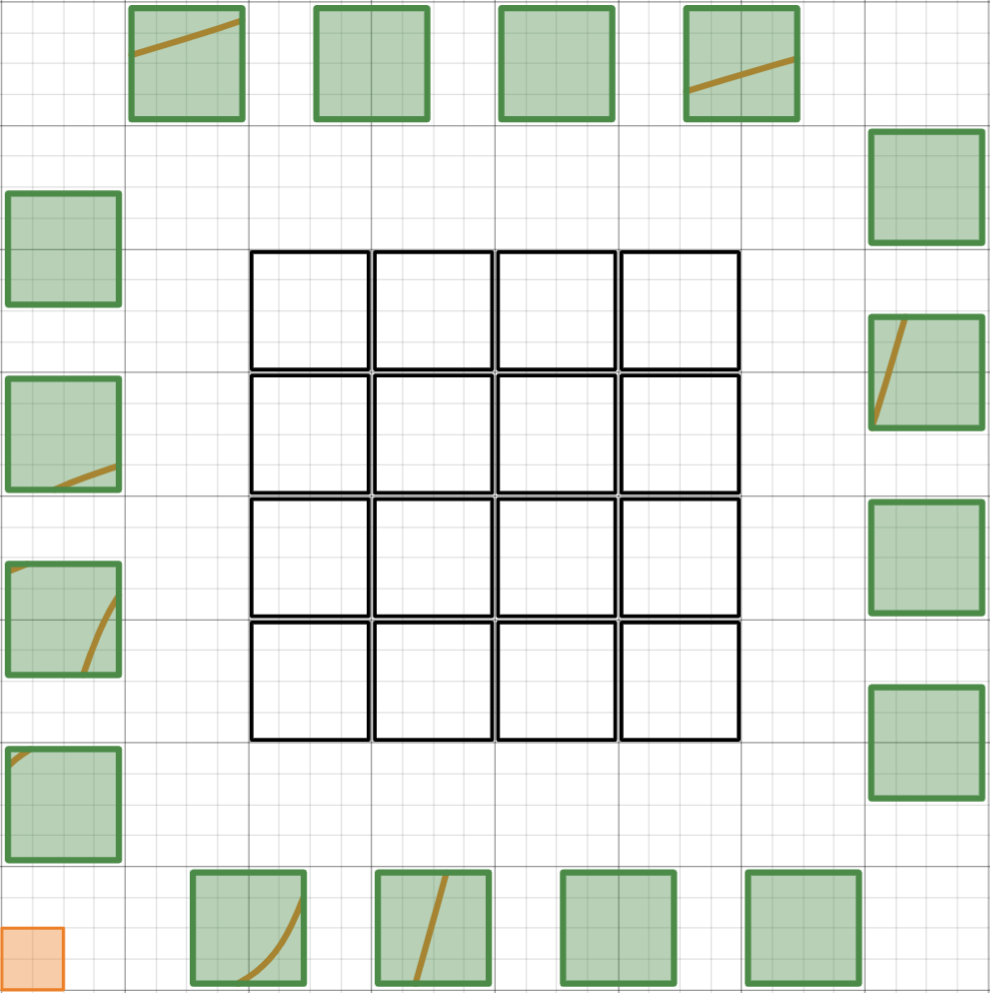
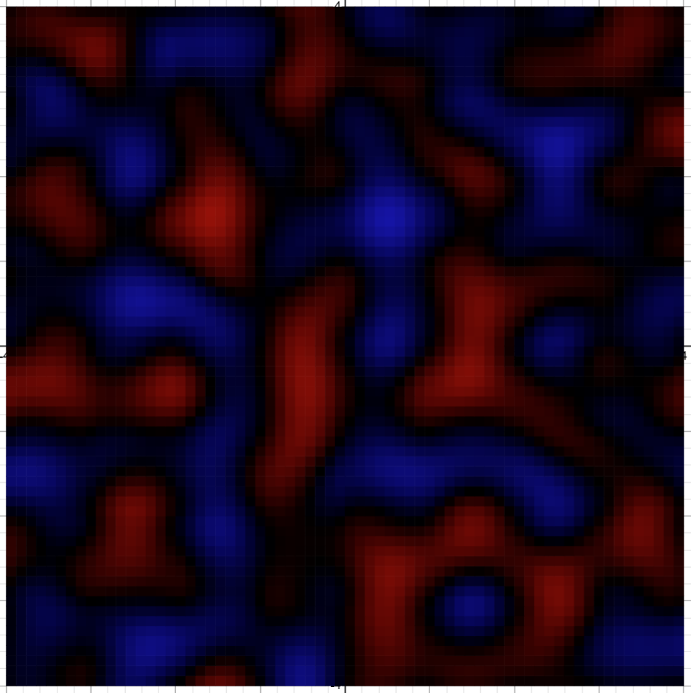
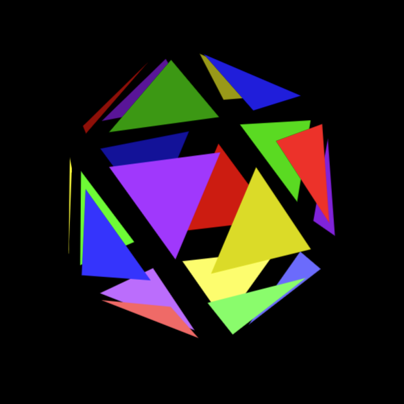
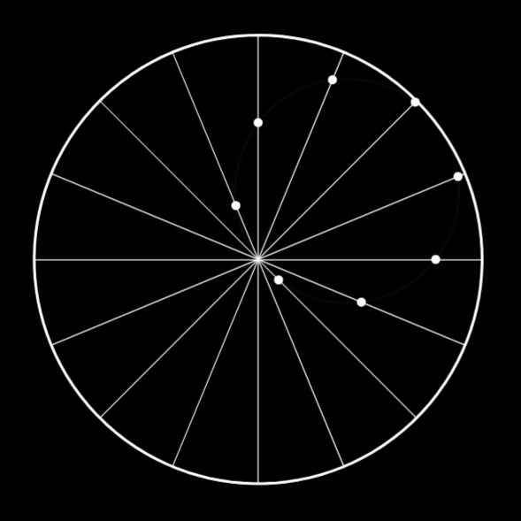
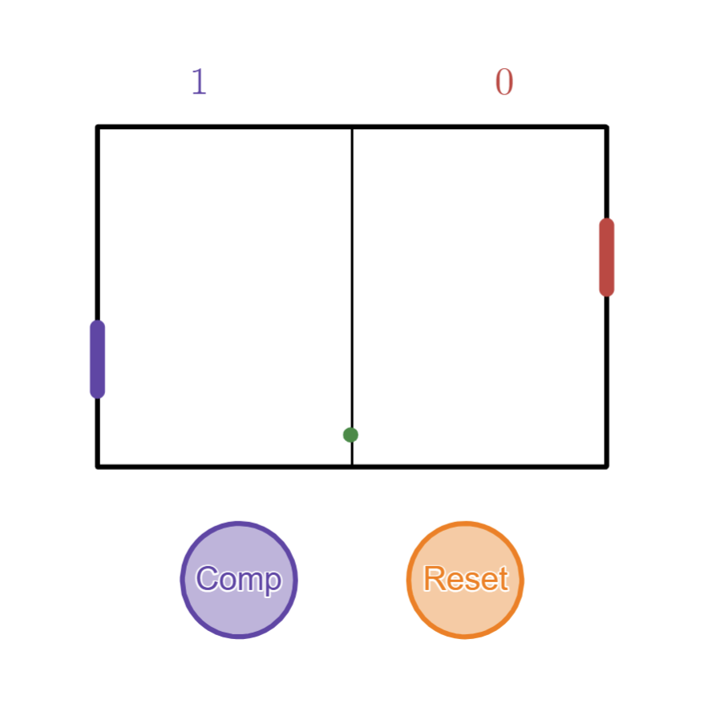

Under Construction
Typically Desmos is used as a graphing calculator to plot functions from \( \mathbb{R}\) to \(\mathbb{R}\). It does, however, have lesser known features like lists, list comprehension, polygons, and the full scope of RGB colors, which allow us to do so much more. How much more?
A common exercise in introductory computer science courses will ask students to implement Conway's Game of Life. While to my knowledge no such course quite exists for Desmos, enthusiasts will take it upon themselves to give it a stab.
The following is a collection of various Desmos resources.
| General Techniques |
Educational Tools |
Library |
Here is a selection of interesting mathematical examples showing some of what Desmos can do beyond plotting graphs of functions.
Point-in-polygon Problem |
Thomae's Popcorn Function |
Dynamical Billiards |
The following examples are more involved and may have some non-trivial amount of user interaction.
| Animated Puzzle  |
Tower of Hanoi |
Maze Generator |
| Perlin Noise  |
Exploding Icosahedron  | Circle Illusion  |
| Pong  |
QR Code Builder |
Voronoi Diagrams |
| Tetris | Physics Simulation | Presentation |